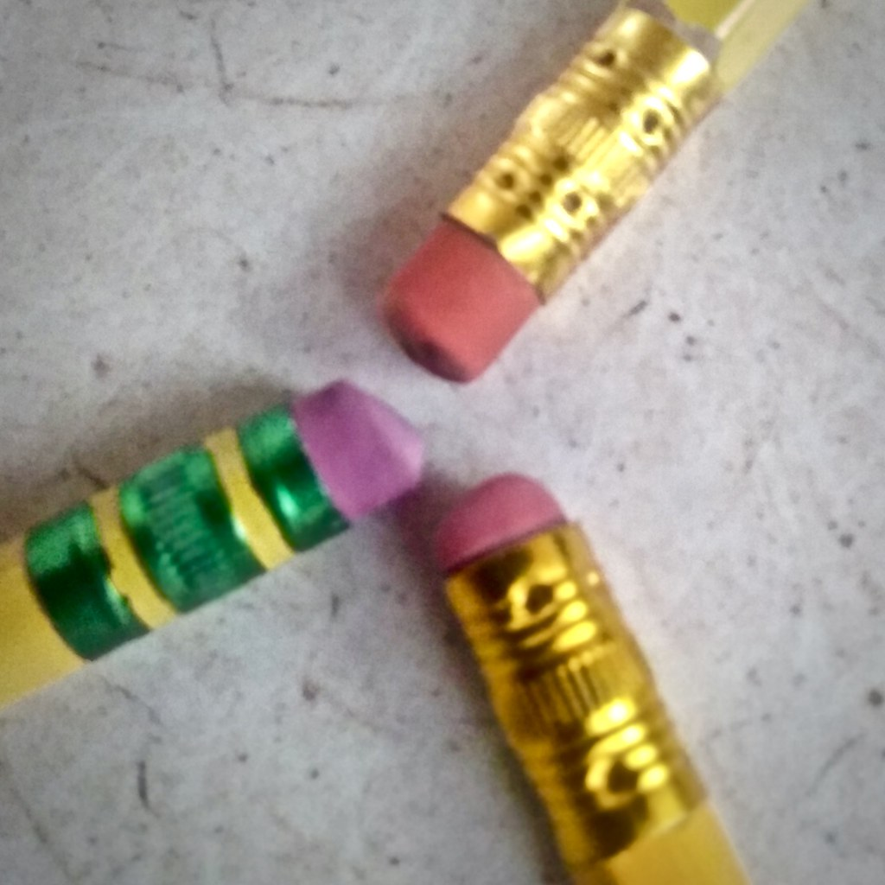
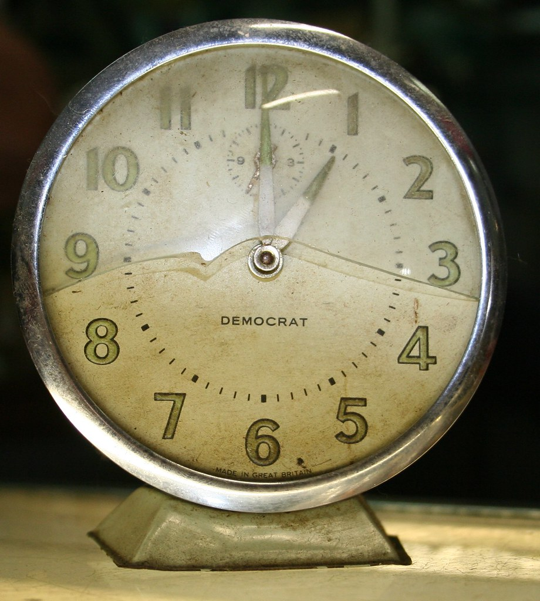

Características
-

Primer objetivo
Integridad de la versión actual
Son cambios de un item de configuración para que sea incorporado en la versión acutal del software y estos cambios son almacenados en un repositorio para que sean recuperados.
-

Segundo objetivo
Integridad de sobre-escritura
Se trata de que los desarrolladores pueden trabajar al mismo tiempo en los items de configuración sin afectar a los demás.
-

Tercer objetivo
Deshacer
Es devolver a una versión anterior cuando se hace un cambio incorrecto.
"Erasers" by neukomment is licensed under CC BY-ND 2.0
-

Cuarto objetivo
Recuperación de desastres
Es guardar versiones previas de un software para poder volver a esas versiones en caso de ser necesario.
"Clocks for Den" by robstephaustralia is licensed under CC BY 2.0